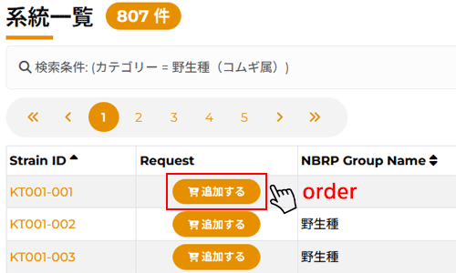
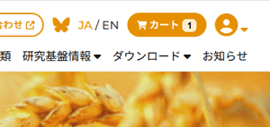
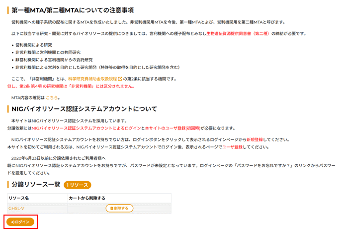

最初にお読みください
NBRP・コムギでは、2010年4月1日より、リソースの配布にかかわる実費を利用者に負担していただくこととなりました。 リソース配布事業の永続化を目指した有償化となりましたこと、ご理解いただきますようお願いいたします。
リソース配布に関する注意事項
- ウエブ発注システムからご注文いただけます。リソースの国内配布に関する手数料は、リクエストあたりの配布基本料に系統手数料（配布数を乗じる）を合算したものです。 詳細は種子系統配布料金表をご確認ください。
- 受注後、在庫を確認したのち、正確な請求金額を別途電子メールでお知らせいたします。
- 非営利機関用MTA（第一種MTA）と、営利機関用MTA（第二種MTA）が整備されました。
以下に該当する研究・開発に対するバイオリソースの提供につきましては、営利機関への種子配布とみなし生物遺伝資源提供同意書（第二種）の締結が必要です。
- 営利機関による研究
- 非営利機関と営利機関との共同研究
- 非営利機関による営利機関からの委託研究
- 非営利機関による営利を目的とした研究開発（特許等の取得を目的とした研究開発を含む）
ここで、「非営利機関」とは、科学研究費補助金取扱規程の第2条に該当する機関です。 但し、第2条 第4項 の研究機関は「非営利機関」には区分されません。
- リソースに関するMTAをご所属機関との間で取り交わします。ご所属機関の長のサインが必要です。 種子系統に関しては 京都大学とMTAを交わします。
- ウェブ発注システムの請求書の当て先欄は、ご所属機関で支払い可能な宛先をご確認の上、ご記入願います。
- 正しく記入されたMTA（2部）が届いた後、請求書を送付します。指定の口座に入金が確認された時点でリソースを郵送します。 リクエストからリソース発送までに一定の事務手続き期間を必要とします（種子の国内配布でおよそ6週間）。 MTAのサインに付す日付は2通とも同じ日付にしてください。また、センター記入欄（記入例で赤字指定）については、こちらで記入しますので、空欄にしておいてください。
- 配布の遅延を避けるため、指定の銀行口座への振り込みが済みましたら、京都大学（nbrpkmg.ku [at] gmail.com）まで、振込日をご連絡ください。
- 配布に関して質問のある方は、nbrpkmg.ku [at] gmail.comまでご連絡ください。
申し込み方法
手順
- 系統を探してカートに入れる
- 依頼者情報を入力する
- 請求先情報を入力する
- 分譲依頼の確認をする
- 分譲依頼が完了
系統分譲依頼申し込み方法
1. 系統を探してカートに入れる
- NBRP系統より欲しい系統を探します。
- 欲しい系統が決まったら、 追加する を押します。
- 希望リソースを確認し、必要があれば依頼を追加します。

- 欲しい系統がすべて決まったら、 カート を押します。

2. 依頼者情報を入力する
- キャンセルしたいときは分譲リソース一覧の 削除する を押します。
- ログインボタン ログイン を押します。

- メールアドレス、パスワードを入力して、ログインボタンを押します。

新規登録者
- 依頼者情報を入力して、下の登録ボタンを押します。
- 御記入の際、半角カナおよび機種依存文字は文字化けの原因になりますので御使用にならないようお願い致します。
- ※の項目は必ず入力して下さい。

3. 請求先情報を入力する
- 分譲依頼する系統を確認します。
- 請求予定金額を確認します。 合計金額は100円未満を切り上げて表示しています。
- 依頼者の登録情報を確認します。
- 請求先情報を確認します。 依頼者情報と同じなら、「依頼者情報と請求先は同じ」にチェックをします。 請求先が異なるなら、請求先情報入力フォームに必要事項を記入します。
- 非営利機関・営利機関の選択をします。
- 希望、質問などがあれば備考に記入します。
- 記入が出来たら、確認ボタンを押します。

4. 分譲依頼の確認をする
- 分譲依頼する系統を確認します。
- 請求予定金額を確認します。 合計金額は100円未満を切り上げて表示しています。 請求予定金額を確認したら、「請求金額の支払に同意する」にチェックを入れます。
- 依頼者情報の内容を確認します。
- 請求先情報の内容を確認します。
- 備考内容を確認します。
- この内容でよろしければ送信ボタンを押します。変更がある場合は、戻るボタンを押します。

これで分譲依頼の完了です。

5. 分譲依頼が完了
以上で分譲依頼が完了です。 登録されたメールアドレスに確認のメールが届きます。
確認メールに添付されているMTA(MATERIAL TRANSFER AGREEMENT)は印刷後、 研究グループの代表者が責任を持って必要事項を記入し、下記の中核機関宛に郵送でお送りください。 MTA末尾のAuthorized Institutional Officialの署名欄は、所属機関の長のサインをお願いいたします。 （ MTA記入例 ）
※MTAはFAXやe-mail添付では送らないでください。
正しく記入された書類が届いた時点で系統を郵送します。 何か問題がございましたら、Request IDを明記の上、下記のメールアドレスまでご連絡下さい。
京都大学大学院農学研究科
NBRP・コムギ事務局
〒606-8502 京都市左京区北白川追分町
nbrpkmg.ku [at] gmail.com